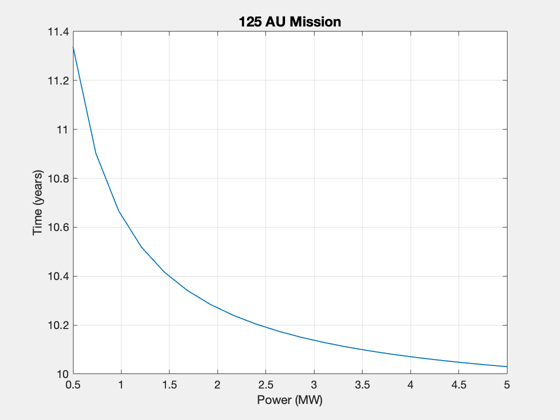

Contents
NASA roadmap mission point solutions to Jupiter, Pluto, 125 AU
Calculate the straight-line, constant thrust delta-V's (point solutions).
1. Jupiter at 5 AU in 1 year - about 98.5 km/s DV 2. Pluto at 40 AU in 5 years - about 151.7 km/s DV 3. 125 AU in 10 years - about 237.0 km/s DV
The delta-V's increase with each mission, but the average acceleration goes down.
See also ComputeDuration, ComputeThrust, ConstantAccelDV, EngineReport, Straight2DStructure, Constant, DisplayLatexTable, Plot2D
%-------------------------------------------------------------------------- % Copyright 2018 Princeton Satellite Systems, Inc. All rights reserved. %--------------------------------------------------------------------------
Constants and initializations
year = 365.25*86400; % s au = Constant('au'); d = Straight2DStructure; d.uE = 100; DVt = []; DVa = []; Pwr = []; tau = []; dist = [];
5 AU, 1 year
kM = 1; tau(kM) = 1*year; dist(kM) = 5.2; d.dF = dist(kM)*au; d.tF = tau(kM); avgDV = ConstantAccelDV( d ); DVa(kM) = avgDV; thrust = ComputeThrust( d ); [sL,data] = EngineReport( thrust, d ); DVt(kM) = 2*data.vS; TtoW = thrust/data.m0; fprintf('----------------\n'); fprintf('5 AU in 1 year (Jupiter)\n'); DisplayLatexTable(sL); fprintf('-----\n'); fprintf('Constant accel DV:\t%.1f km/s\n',avgDV); fprintf('Constant thrust DV:\t%.1f \n',DVt(kM)); fprintf('T/W:\t%2.g \n',TtoW);
----------------
5 AU in 1 year (Jupiter)
---- INPUTS ---- -- --
Payload 1000 kg
Desired distance 5.20 AU
Travel time 1.00 years
---- ENGINE ---- -- --
Thrust Efficiency 0.40
Exhaust velocity 100 km/s
Specific Power 1.00 kW/kg
Fuel Tank Fraction 0.05
---- OUTPUTS ---- -- --
Payload Mass Fraction 0.08 mP/m0
Payload Power Fraction 3.05 kW/kg
Delta-V 100.68 km/s
---- PAYLOAD DEPENDENT ---- -- --
Thrust 24.43 N
Power 3.05 MW
Total Mass 12149.12 kg
Mass Dry 4439.34 kg
Mass Engine 3053.85 kg
Mass Fuel 7709.78 kg
Flow Rate 0.24 g/s
-----
Constant accel DV: 98.6 km/s
Constant thrust DV: 100.7
T/W: 0.002
40 AU, 5 years
kM = 2; tau(kM) = 5*year; dist(kM) = 40; d.dF = dist(kM)*au; d.tF = tau(kM); d.uE = 80; d.sigma = 750; d.eta = 0.3; avgDV = ConstantAccelDV( d ); DVa(kM) = avgDV; thrust = ComputeThrust( d ); [sL,data] = EngineReport( thrust, d ); DVt(kM) = 2*data.vS; TtoW = thrust/data.m0; fprintf('----------------\n'); fprintf('40 AU in 5 years (Pluto)\n'); DisplayLatexTable(sL); fprintf('-----\n'); fprintf('Constant accel DV:\t%.1f \n',avgDV); fprintf('Constant thrust DV:\t%.1f \n',DVt(kM)); fprintf('T/W:\t%2.g \n',TtoW);
----------------
40 AU in 5 years (Pluto)
---- INPUTS ---- -- --
Payload 1000 kg
Desired distance 40.00 AU
Travel time 5.00 years
---- ENGINE ---- -- --
Thrust Efficiency 0.30
Exhaust velocity 80 km/s
Specific Power 0.75 kW/kg
Fuel Tank Fraction 0.05
---- OUTPUTS ---- -- --
Payload Mass Fraction 0.01 mP/m0
Payload Power Fraction 11.76 kW/kg
Delta-V 164.89 km/s
---- PAYLOAD DEPENDENT ---- -- --
Thrust 88.17 N
Power 11.76 MW
Total Mass 199264.54 kg
Mass Dry 25368.87 kg
Mass Engine 15674.09 kg
Mass Fuel 173895.67 kg
Flow Rate 1.10 g/s
-----
Constant accel DV: 151.7
Constant thrust DV: 164.9
T/W: 0.0004
125 AU, 10 years
kM = 3; tau(kM) = 10*year; dist(kM) = 125; d.dF = dist(kM)*au; d.tF = tau(kM); d.uE = 140; d.mP = 500; d.eta = 0.3; % Can 1 MW do the mission? power = linspace(0.5,5,20); tMin = ComputeDuration( power*1e6, d ); Plot2D(power,tMin/86400/365.25,'Power (MW)','Time (years)','125 AU Mission') %d.uE = 120; avgDV = ConstantAccelDV( d ); DVa(kM) = avgDV; thrust = ComputeThrust( d ); [sL,data] = EngineReport( thrust, d ); DVt(kM) = 2*data.vS; TtoW = thrust/data.m0; fprintf('----------------\n'); fprintf('125 AU in 10 years (interstellar precursor)\n'); DisplayLatexTable(sL); fprintf('-----\n'); fprintf('Constant accel DV:\t%.1f \n',avgDV); fprintf('Constant thrust DV:\t%.1f \n',DVt(kM)); fprintf('T/W:\t%2.g \n',TtoW); %-------------------------------------- % $Id: 5de261a05a62ed568a2a6fccea0e10723e840a3e $
Warning: EngineReport: Distance not achieved!
Warning: EngineReport: Distance not achieved!
Warning: EngineReport: Distance not achieved!
Warning: EngineReport: Distance not achieved!
Warning: EngineReport: Distance not achieved!
Warning: EngineReport: Distance not achieved!
Warning: EngineReport: Distance not achieved!
Warning: EngineReport: Distance not achieved!
Warning: EngineReport: Distance not achieved!
Warning: EngineReport: Distance not achieved!
Warning: EngineReport: Distance not achieved!
Warning: EngineReport: Distance not achieved!
Warning: EngineReport: Distance not achieved!
Warning: EngineReport: Distance not achieved!
Warning: EngineReport: Distance not achieved!
Warning: EngineReport: Distance not achieved!
Warning: EngineReport: Distance not achieved!
Warning: EngineReport: Distance not achieved!
Warning: EngineReport: Distance not achieved!
----------------
125 AU in 10 years (interstellar precursor)
---- INPUTS ---- -- --
Payload 500 kg
Desired distance 125.00 AU
Travel time 10.00 years
---- ENGINE ---- -- --
Thrust Efficiency 0.30
Exhaust velocity 140 km/s
Specific Power 0.75 kW/kg
Fuel Tank Fraction 0.05
---- OUTPUTS ---- -- --
Payload Mass Fraction 0.01 mP/m0
Payload Power Fraction 12.25 kW/kg
Delta-V 252.93 km/s
---- PAYLOAD DEPENDENT ---- -- --
Thrust 26.24 N
Power 6.12 MW
Total Mass 70767.70 kg
Mass Dry 11620.76 kg
Mass Engine 8163.42 kg
Mass Fuel 59146.94 kg
Flow Rate 0.19 g/s
-----
Constant accel DV: 237.0
Constant thrust DV: 252.9
T/W: 0.0004
